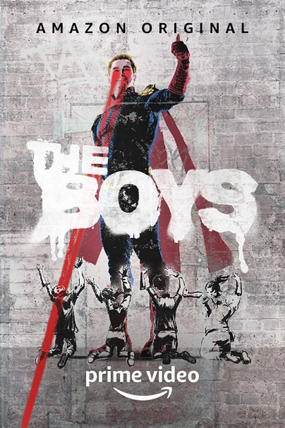

A Obra:
The Boys é uma série de televisão norte-americana de super-heróis, ação, drama e sátira desenvolvida por Eric Kripke para o Amazon Prime Video. Baseada nas histórias em quadrinhos de mesmo nome criadas por Garth Ennis e Darick Robertson, a produção acompanha o grupo homônimo de vigilantes em sua luta contra indivíduos superpoderosos, conhecidos como "Supers", que frequentemente abusam de suas habilidades para benefício próprio e trabalham para uma poderosa corporação chamada Vought International. A empresa controla a imagem pública desses heróis, transformando-os em celebridades mundiais, enquanto esconde seus crimes, escândalos e atos de corrupção. A série é estrelada por Karl Urban, Jack Quaid, Antony Starr, Erin Moriarty, Dominique McElligott, Jessie T. Usher, Chace Crawford, Laz Alonso, Tomer Capone, Karen Fukuhara, Nathan Mitchell, Elisabeth Shue, Colby Minifie, Aya Cash, Claudia Doumit, Jensen Ackles, Cameron Crovetti, Susan Heyward, Valorie Curry, Jeffrey Dean Morgan e Daveed Diggs. Seu enredo se destaca por apresentar uma visão mais realista, sombria e crítica do universo dos super-heróis, abordando temas como política, manipulação midiática, corrupção corporativa e abuso de poder.
Inicialmente planejada para ser uma trilogia de longa-metragens, a adaptação dos quadrinhos começou a ser desenvolvida em 2008, com Adam McKay cotado para a direção. No entanto, devido a divergências criativas entre a equipe técnica e os estúdios envolvidos, o projeto acabou sendo arquivado. O desenvolvimento de The Boys foi retomado em 2016 pelo canal Cinemax, que anunciou a reformulação do projeto como uma série de televisão. Eric Kripke assumiu o posto de showrunner, enquanto Seth Rogen, Evan Goldberg e James Weaver foram integrados como produtores executivos. Em novembro de 2017, a Amazon Studios adquiriu os direitos da série junto à Sony Pictures Television, dando início à produção em maio de 2018, em Toronto, no Canadá. As gravações ocorreram em diversas locações da cidade, que serviram como cenário para a fictícia Nova York apresentada na série.
A primeira temporada de The Boys, composta por oito episódios, estreou em 26 de julho de 2019 e rapidamente se tornou um dos maiores sucessos da plataforma de streaming. A segunda temporada foi lançada em 4 de setembro de 2020, aprofundando ainda mais os conflitos entre os personagens e expandindo o universo da Vought International. A terceira temporada estreou em 3 de junho de 2022, introduzindo novos personagens importantes e alguns dos momentos mais marcantes da série. Em junho de 2022, a produção foi renovada para uma quarta temporada, lançada em 13 de junho de 2024. Em maio de 2024, a Amazon confirmou a renovação para uma quinta e última temporada, encerrando a história principal iniciada em 2019. Ao longo dos anos, The Boys consolidou-se como uma das produções mais populares e assistidas do catálogo do Prime Video, conquistando uma enorme base de fãs ao redor do mundo.
Como parte de um universo compartilhado em constante expansão, a franquia ganhou diversos projetos derivados. Entre eles estão a websérie Seven on 7, lançada em 7 de julho de 2021, que apresenta notícias fictícias do universo da série; a antologia animada para adultos Diabolical, lançada em 4 de março de 2022; e a série live-action Gen V, que estreou em 29 de setembro de 2023 e explora a vida de jovens Supers em treinamento em uma universidade administrada pela Vought. Além disso, uma série prequela intitulada Vought Rising encontra-se em desenvolvimento e deverá explorar as origens da corporação décadas antes dos acontecimentos da série principal. Esses derivados ajudam a expandir a mitologia da franquia e aprofundam diversos aspectos do universo criado por Garth Ennis e Darick Robertson.
Desde sua estreia, The Boys tem recebido críticas amplamente positivas, com elogios direcionados à sua cinematografia, efeitos visuais, trilha sonora, atuações e sequências de ação. A interpretação de Antony Starr como Capitão Pátria é frequentemente apontada como um dos pontos altos da série, sendo considerada uma das performances mais marcantes da televisão contemporânea. A produção também se destaca pelo humor ácido, violência gráfica e crítica social, elementos que a diferenciam de outras obras do gênero. Ao longo de sua trajetória, a série conquistou diversos prêmios e indicações importantes, incluindo reconhecimentos no Primetime Emmy Awards, Critics' Choice Super Awards e Astra TV Awards. Graças à sua abordagem inovadora e à qualidade de sua produção, The Boys tornou-se um fenômeno cultural global e uma das séries de super-heróis mais influentes da atualidade.